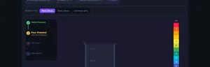

Litmus Paper Test — Colour Chart & Virtual Lab
Test chemicals with red litmus, blue litmus & universal pH paper
3D Model — Environmental: Water pH & Litmus Test
Interactive 3D model of this apparatus. Pick a component on the right, then drag to rotate · scroll to zoom · right-drag to pan.
Click "New Problem" to begin.
Click "Start Quiz" to begin a 5-question round.
1 Overview
The Litmus Paper Test Virtual Lab lets you perform acid-base indicator tests on 15 common chemicals (plus custom chemicals you define) using three types of indicator paper: red litmus, blue litmus, and universal pH paper. Each chemical has accurate pH values and realistic colour-change behaviour. The readout panel reveals chemical name, formula, pH value, acid-base classification, and litmus result after each test. Sound effects accompany the pour and dip actions for a more immersive experience.
2 Running a Test (Simulate Mode)

The step-by-step chain indicator in the top-left of the canvas guides you through each test. Follow these steps:
- Click a chemical button (or + Custom to enter your own pH value).
- Choose a paper type: Red Litmus, Blue Litmus, or Universal (pH).
- Click Pour Chemical — the beaker fills with an animated pour.
- Click Dip Paper — the strip descends and the colour change animates over 2 seconds.
- Read the five readout cards that appear: Chemical, Formula, pH Value, Classification, and Litmus Result.
- Click Reset Lab to clear and run another test, or select a new chemical directly (the lab auto-resets).
After a result appears, use Export PNG to download a snapshot of the lab canvas, or Copy Result to copy the result text to your clipboard. Right-clicking on the canvas also gives you these options.
3 Custom Chemical Testing
Click the + Custom button in the chemical row to open the custom pH panel. Enter a name (e.g. "Orange Juice") and drag the pH slider from 0 to 14. The display updates in real time with the pH colour. Click Test It to add your custom chemical as a starred entry in the chemical row and run it through the normal test procedure. Your custom entry is saved for the session so you can switch paper types and re-test without re-entering the values.
4 Background Theory
Click the Explore tab for concept cards organised into four categories: pH Scale, Indicators, Acids, and Bases. Topics include the logarithmic nature of pH, how litmus dye changes structure at the molecular level, strong vs weak acids, neutralization reactions, and real-world applications. Each card shows the key formula and a worked example.
5 Practice & Quiz Modes
Practice mode generates 12 different question types including classification, litmus colour prediction, pH calculation, dilution problems, and neutralization products. Click New Problem, answer by selecting an option or typing a number, then click Check. Your running score is displayed. Click Show Solution to see the worked explanation.
Quiz mode presents 5 randomly selected questions per round from a pool of 15. After all 5, you see your score, star rating, and a full answer breakdown. Click Retake Quiz for a fresh set.
6 Lab Tips
- Key rule: blue litmus turns red in acid; red litmus turns blue in base. Neither changes in neutral solutions.
- Universal pH paper is more informative — it gives a colour for every pH level, not just acid or base.
- Test the same chemical with all three paper types to compare the level of information each provides.
- The pH scale is logarithmic: pH 3 is 10× more acidic than pH 4, and 100× more acidic than pH 5.
- Use + Custom to test any pH from 0 to 14 — useful for exploring edge cases or exam scenarios.
- Right-click the canvas after a test to quickly export a PNG or reset the lab without scrolling to the buttons.
- Common exam values to memorise: HCl pH 1, lemon juice pH 2, vinegar pH 3, pure water pH 7, baking soda pH 8, NaOH pH 14.
Understanding Litmus Paper Tests and pH Indicators

Litmus paper tests whether a substance is acidic, basic, or neutral. Blue litmus turns red in acids (pH below 7); red litmus turns blue in bases (pH above 7). At pH 7 — neutral — neither paper changes colour. This virtual lab lets you test 15 chemicals with red litmus, blue litmus, and universal pH paper and observe animated colour changes in real time.
What colour does litmus paper turn in an acid or base?
| Chemical | pH | Class | Red Litmus | Blue Litmus |
|---|---|---|---|---|
| Hydrochloric Acid | 1 | Strong Acid | Stays Red | Turns Red |
| Lemon Juice | 2 | Weak Acid | Stays Red | Turns Red |
| Vinegar | 3 | Weak Acid | Stays Red | Turns Red |
| Pure Water | 7 | Neutral | No Change | No Change |
| Baking Soda | 8 | Weak Base | Turns Blue | Stays Blue |
| Ammonia | 11 | Strong Base | Turns Blue | Stays Blue |
| Sodium Hydroxide | 14 | Strong Base | Turns Blue | Stays Blue |
What is the pH scale and how is it measured?
The pH scale runs from 0 to 14 and quantifies how acidic or basic a solution is. It is defined as the negative base-10 logarithm of the hydrogen ion concentration: pH = −log[H⁺]. Because the scale is logarithmic, each whole number change represents a tenfold difference in acidity. Pure water at 25°C has a pH of exactly 7. Strong acids like hydrochloric acid approach pH 0, while strong bases like sodium hydroxide reach pH 14.
What is the difference between litmus paper and universal indicator?
Litmus paper gives a binary result — acid or base. Universal indicator paper (pH paper) contains a blend of dyes — typically methyl red, bromothymol blue, and phenolphthalein — that produce a continuous spectrum from red (pH 1) through green (pH 7) to violet (pH 14). This lets you estimate the exact pH rather than just the acid-base category, making it ideal for quantitative experiments such as soil testing or aquarium monitoring.
What are common examples of acids and bases in everyday life?
Lemon juice (pH 2) and vinegar (pH 3) are weak acids found in cooking. Black coffee (pH 5) and tomato juice (pH 4) are mildly acidic. On the basic side, baking soda solution (pH 8–9), household ammonia (pH 11), and bleach (pH 13) are everyday examples. Understanding pH helps explain cleaning power, taste, and safety requirements for each substance.
Who uses a litmus paper test simulator?
This virtual lab is designed for secondary-school and vocational chemistry students, science teachers preparing demonstrations, and engineering learners exploring physical chemistry. It provides a safe, interactive environment to master pH concepts without handling real chemicals, with animated colour transitions that make acid-base theory tangible and memorable.
Explore Related Simulators
If you found this litmus test simulator helpful, explore our Boyle's Law Simulator, Ideal Gas Law Simulator, Phase Change Simulator, Specific Heat Capacity Simulator, and Titration Simulator for more hands-on chemistry and physics practice.